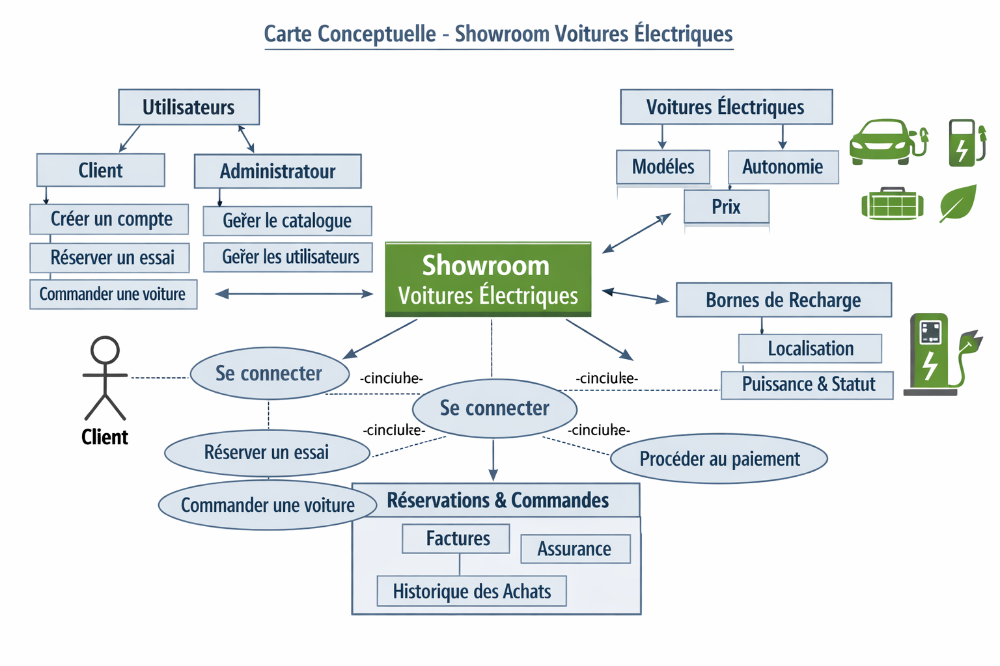
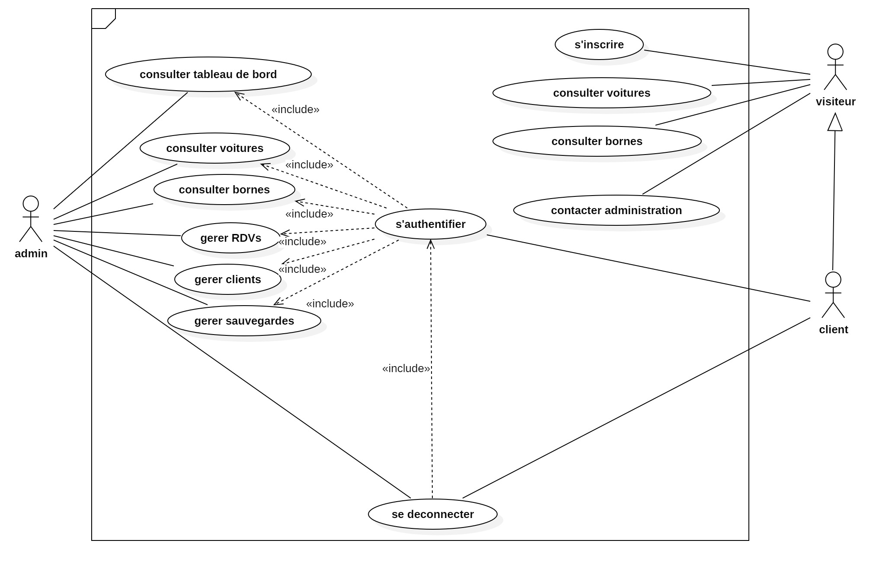
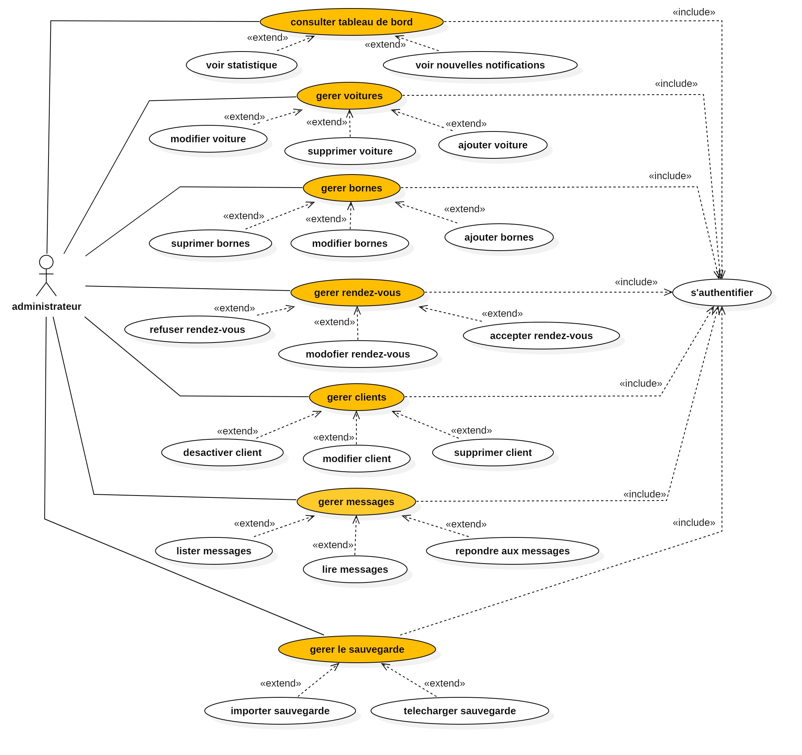
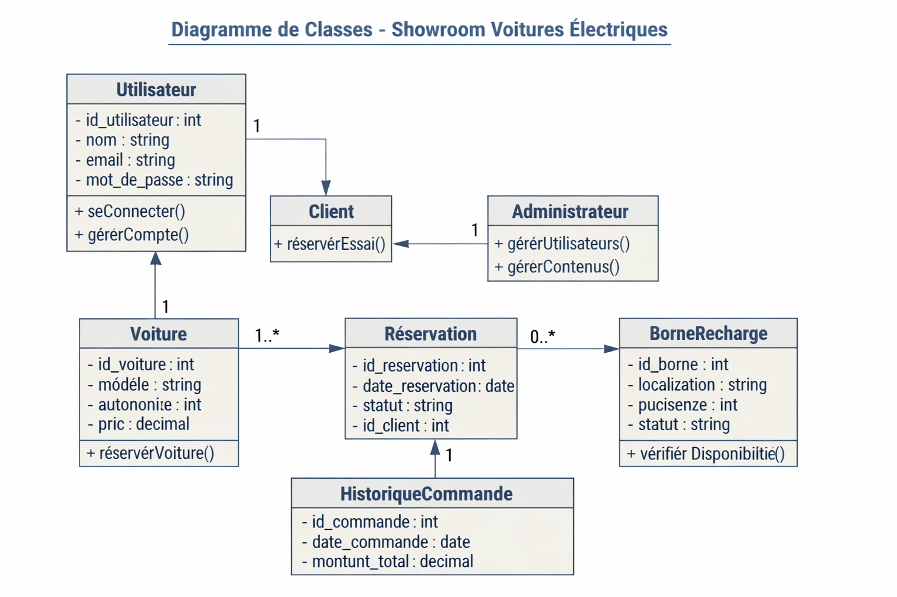

MINISTÈRE DE L’ENSEIGNEMENT SUPÉRIEUR ET DE LA RECHERCHE SCIENTIFIQUE
Institut des Sciences Privées Internationales (ISPRI)
Par
| Encadrant | Monsieur Nidhal TARHOUNI |
| Réalisé au sein de | Institut ISPRI — Projet personnel à but pédagogique |
Session : Octobre 2024 / 2026
Code : (à compléter)
Sujet : EcoDrive — Site web de showroom et de catalogue de véhicules électriques en Tunisie
| N° | Libellé |
|---|---|
| Figure 1 | L’organigramme simplifié de l’ISPRI |
| Figure 2 | La carte conceptuelle d’EcoDrive |
| Figure 3 | Le diagramme de cas d’utilisation général |
| Figure 4 | Le diagramme de cas d’utilisation du client |
| Figure 5 | Le diagramme de cas d’utilisation de l’administrateur |
| Figure 6 | L’architecture 3-tiers d’EcoDrive |
| Figure 7 | Le diagramme de déploiement d’EcoDrive |
| Figure 8 | Le modèle MVC appliqué à EcoDrive |
| Figure 9 | Le diagramme de classes |
| Figure 10 | Le diagramme de cas d’utilisation du Sprint 1 |
| Figure 11 | Le diagramme de séquence d’authentification |
| Figure 12 | L’interface de connexion |
| Figure 13 | L’interface d’inscription |
| Figure 14 | Le cas d’utilisation « Gérer les utilisateurs » |
| Figure 15 | Le diagramme de séquence « Ajouter un utilisateur » |
| Figure 16 | L’interface de la liste des utilisateurs (admin) |
| Figure 17 | Le cas d’utilisation du catalogue |
| Figure 18 | Le diagramme de séquence « Rechercher et filtrer » |
| Figure 19 | L’interface du catalogue |
| Figure 20 | L’interface d’une fiche technique voiture |
| Figure 21 | Le cas d’utilisation « Gérer les voitures » |
| Figure 22 | L’interface d’ajout d’une voiture (admin) |
| Figure 23 | Le cas d’utilisation « Gérer les bornes » |
| Figure 24 | L’interface de la liste des bornes |
| Figure 25 | L’interface d’une fiche borne |
| Figure 26 | Le diagramme d’états-transitions d’une réservation |
| Figure 27 | Le diagramme de séquence « Réserver un essai » |
| Figure 28 | L’interface de réservation d’un essai |
| Figure 29 | L’interface de la liste des essais du client |
| Figure 30 | Le cas d’utilisation « Contact et newsletter » |
| Figure 31 | L’interface du formulaire de contact |
| Figure 32 | L’interface du tableau de bord d’administration |
| Figure 33 | L’interface des graphiques statistiques (admin) |
| Figure 34 | L’interface du journal d’audit |
(Remarque : les figures 6, 7, 8, 10, 11, 14, 15, 16, 17, 18, 21, 22, 23, 26, 27, 28, 29, 30, 32, 33, 34 restent à compléter avec les diagrammes UML et les captures des espaces authentifiés.)
| N° | Libellé |
|---|---|
| Tableau 1 | Les acteurs Scrum |
| Tableau 2 | Le backlog du produit |
| Tableau 3 | La planification des releases |
| Tableau 4 | Les besoins fonctionnels par module |
| Tableau 5 | Les caractéristiques techniques de la machine de travail |
| Tableau 6 | L’environnement logiciel utilisé |
| Tableau 7 | La description des classes principales (extrait du modèle relationnel) |
| Tableau 8 | Le backlog du Sprint 1 |
| Tableau 9 | La description textuelle du cas d’utilisation « S’authentifier » |
| Tableau 10 | La description textuelle du cas d’utilisation « Créer un compte » |
| Tableau 11 | Le backlog du Sprint 2 |
| Tableau 12 | La description textuelle « Créer un utilisateur » (admin) |
| Tableau 13 | La description textuelle « Modifier profil » |
| Tableau 14 | Le backlog du Sprint 3 |
| Tableau 15 | La description textuelle « Consulter le catalogue » |
| Tableau 16 | Le backlog du Sprint 4 |
| Tableau 17 | La description textuelle « Ajouter une voiture » (admin) |
| Tableau 18 | La description textuelle « Ajouter une borne » (admin) |
| Tableau 19 | Le backlog du Sprint 5 |
| Tableau 20 | La description textuelle « Réserver un essai » |
| Tableau 21 | Le backlog du Sprint 6 |
| Tableau 22 | La description textuelle « Envoyer un message » |
| Tableau 23 | Le backlog du Sprint 7 |
| Tableau 24 | La description textuelle « Consulter le tableau de bord » (admin) |
| Tableau 25 | Les contrastes entre notre solution et les solutions existantes |
C’est avec un immense plaisir que je remercie l’ensemble des personnes qui m’ont soutenu et aidé, de loin ou de près, à la réalisation de ce travail qui vient couronner l’aboutissement de plus de deux années de travail intense.
Ma première pensée est pour ma famille, foyer d’encouragement et d’amour tout au long de mon parcours académique. Merci du fond du cœur. Mon père est une source d’inspiration et de motivation sans fin par ses conseils et son encadrement ; il me guide inlassablement vers l’excellence. Je remercie ma mère pour sa foi en moi ; elle m’a toujours soutenu dans mes prises de décision et mes idées de projet. Qu’il me soit aussi permis de remercier mon frère et ma sœur pour leurs soutiens, leurs encouragements et leurs généreux conseils.
Je remercie sincèrement Monsieur Nidhal Tarhouni, mon encadrant, pour sa disponibilité, ses précieux conseils et le temps qu’il a bien voulu me consacrer tout au long de ce projet. Grâce à sa confiance j’ai pu m’accomplir pleinement dans mes missions et mener à bien ce travail.
Je remercie également tous les enseignants et les intervenants de l’ISPRI qui ont su me transmettre leurs savoirs. Certains m’ont permis de me passionner pour des sujets qui m’intéressaient peu, d’autres m’ont ouvert des horizons que je n’imaginais même pas. Enfin, une pensée particulière à tous mes collègues pour leur esprit d’équipe et leur soutien moral tout au long de ma formation.
L’industrie automobile mondiale vit une transition majeure : la mobilité électrique s’impose progressivement comme une alternative crédible face aux véhicules thermiques. De nombreux pays, dont la Tunisie, encouragent l’adoption des véhicules électriques (VE) à travers des incitations fiscales et le développement des infrastructures de recharge. Le marché tunisien voit ainsi émerger une demande croissante d’informations fiables, de catalogue produits à jour et de services associés (essais, installation de bornes de recharge…).
Cependant, la plupart des concessions automobiles ne disposent pas d’une vitrine web moderne, complète et intégrée : les informations sont souvent éparpillées entre les réseaux sociaux et les sites institutionnels, les fiches techniques sont incomplètes et il est rarement possible de réserver en ligne un essai de véhicule ou de commander une borne de recharge.
C’est dans ce cadre que s’inscrit le présent projet de fin d’études intitulé « EcoDrive — Site web de showroom et de catalogue de véhicules électriques en Tunisie ». Il s’agit d’un logiciel personnel conçu à but pédagogique, qui vise à couvrir l’ensemble du parcours client d’un concessionnaire de véhicules électriques : présentation du showroom, catalogue détaillé de 14 véhicules électriques, fiches produits des bornes de recharge, réservation d’essais en ligne, gestion de comptes utilisateurs et un panneau d’administration complet.
Ce document retrace les différentes étapes abordées depuis la conception jusqu’à la réalisation de ce projet. Il est constitué principalement de six chapitres :
Ce projet s’inscrit dans le cadre du projet de fin d’étude en vue de l’obtention du Diplôme National de BTS en Informatique de Gestion, assuré par l’Institut des Sciences Privées Internationales (ISPRI). Il consiste en la réalisation d’un site web de showroom et de catalogue de véhicules électriques, développé en PHP, MySQL et JavaScript vanilla, sans framework, dans une démarche d’apprentissage personnel et d’auto-formation.
L’ISPRI — Institut des Sciences Privées International — est un institut de formation professionnelle homologué, spécialisé dans le développement des compétences des étudiants, des employés et des cadres. Il dispense des formations dans le domaine de l’informatique et de la gestion, dont le BTS en Informatique de Gestion, diplôme national permettant d’acquérir les compétences nécessaires au développement et à l’administration de systèmes d’information, à l’analyse et à la conception de bases de données, ainsi qu’à la programmation web et applicative. L’institut est localisé à Tunis.
L’institut propose des programmes accélérés, pratiques et adaptés aux besoins du marché du travail, notamment :
L’adage de l’institut : « Ispri Formation, votre évolution, notre mission ».
La figure suivante présente un organigramme simplifié de l’institut.
┌─────────────────────────┐
│ Direction de l'ISPRI │
└────────────┬────────────┘
│
┌──────────────────────┼──────────────────────┐
│ │ │
┌──────────┴──────────┐ ┌─────────┴─────────┐ ┌──────────┴──────────┐
│ Coordination │ │ Corps formateur │ │ Administration & │
│ pédagogique │ │ (certifiés) │ │ Support (RH, adv.) │
└─────────────────────┘ └───────────────────┘ └─────────────────────┘
│ │
┌──────────┴──────────┐ ┌─────────┴─────────┐
│ Filières BTS & │ │ Langues, Bureau- │
│ Informatique │ │ tique, Management │
└─────────────────────┘ └───────────────────┘[Figure 1 : L’organigramme simplifié de l’ISPRI.]
(À remplacer par l’organigramme officiel de l’institut si disponible.)
Le marché des véhicules électriques en Tunisie est en pleine croissance. Les concessionnaires et les importateurs présentent leurs modèles via des sites vitrines ou des pages sur les réseaux sociaux, tandis que les places de marché généralistes (petites annonces) offrent une visibilité sans réel service associé. Dans ce contexte, nous constatons que les solutions existantes présentent plusieurs lacunes :
Nous pouvons citer quelques exemples de solutions existantes :
Le tableau ci-dessous présente une comparaison rapide des fonctionnalités existantes.
| Fonctionnalité | Sites concessionnaires | Places de marché | Solutions dédiées VE | Notre solution |
|---|---|---|---|---|
| Catalogue détaillé | Partiel | Oui | Variable | Oui |
| Fiches techniques normalisées | Non | Non | Variable | Oui |
| Réservation d’essai en ligne | Non | Non | Rarement | Oui |
| Espace client | Non | Oui | Variable | Oui |
| Panneau d’administration | Non | Non | Variable | Oui |
| Statistiques et export | Non | Non | Non | Oui |
Tableau 25 : Les contrastes entre notre solution et les solutions existantes.
La solution retenue est le développement d’une application web complète et autonome, baptisée EcoDrive, qui couvre :
La figure suivante présente la carte conceptuelle du projet, qui schématise l’idée globale d’EcoDrive et les liens entre ses différents modules.

Pour la conduite du projet, nous avons adopté une méthode agile inspirée de Scrum, structurée en sprints et en releases, et nous avons utilisé UML (Unified Modeling Language) comme langage de modélisation pour spécifier, visualiser et construire l’architecture du système.
Une méthode agile est une approche itérative et incrémentale menée dans un esprit collaboratif. Elle permet de livrer un produit fonctionnel à la fin de chaque itération (sprint). Parmi les méthodes agiles les plus connues : DSDM, Scrum, RAD, Extreme Programming (XP), ASD, Test Driven Development (TDD) et Crystal Clear.
Nous avons opté pour le framework Scrum qui consiste à développer le logiciel de manière incrémentale en maintenant une liste totalement transparente des demandes d’évolutions à implémenter. Ses avantages :
| Acteur | Rôle |
|---|---|
| Product Owner | Porteur de la vision du projet, gère le backlog, définit les priorités |
| Scrum Master | Veille au bon déroulement, lève les obstacles, facilite le travail |
| Équipe de développement | Autogérée, développe le produit sprint après sprint |
Tableau 1 : Les acteurs Scrum.
Pour la phase de conception, nous avons utilisé UML afin de représenter la structure statique (diagrammes de classes, diagrammes de cas d’utilisation) et la vue dynamique (diagrammes de séquence, diagrammes d’états-transitions) du système.
Dans ce chapitre, nous avons présenté le cadre général du projet, l’organisme de formation, l’étude de l’existant ainsi que la méthodologie de travail adoptée. Le chapitre suivant sera consacré à l’analyse des besoins.
Ce chapitre est consacré à l’étude des besoins fonctionnels et non fonctionnels du système, à l’identification des acteurs et à l’élaboration du backlog produit avec une planification des sprints.
| Module | Besoin |
|---|---|
| Showroom | Afficher une sélection de véhicules « mis en avant » sur la page d’accueil |
| Catalogue | Lister les véhicules avec filtres (recherche, marque, prix, année) et tri |
| Fiches techniques | Afficher motorisation, batterie, autonomie, recharge, dimensions |
| Bornes | Présenter les bornes de recharge Exicom avec fiches produits |
| Réservation | Réserver un créneau d’essai en ligne avec règles de validation |
| Espace client | Inscription, connexion, profil, historique des essais |
| Admin | Gérer les voitures, les bornes, les réservations, les messages, la newsletter, les utilisateurs |
| Audit | Journaliser chaque action d’administration |
| Export | Exporter les données en CSV et réaliser une sauvegarde SQL |
| SEO | Sitemap dynamique, robots.txt, balises meta, JSON-LD |
Tableau 4 : Les besoins fonctionnels par module.
private/logs/, sauvegarde de secours des emails ;.env).C’est l’utilisateur non connecté. Il peut consulter le showroom, le catalogue, les fiches techniques, les bornes, les pages statiques (contact, mentions légales, CGV, CGU, confidentialité), s’inscrire et s’authentifier.
C’est l’utilisateur authentifié. En plus des droits du visiteur, il peut réserver un essai, consulter son profil, modifier ses informations personnelles et consulter l’historique de ses essais.
C’est le gestionnaire du site. Il dispose de tous les droits du client et, en plus, il gère les voitures (CRUD + mise en avant), les bornes (CRUD), les réservations (confirmation, annulation), les messages de contact, la newsletter, les utilisateurs (rôles, suppression) et consulte les statistiques et le journal d’audit.


| N° | Sprint | User Story | Acteur | Priorité | Dates |
|---|---|---|---|---|---|
| 00 | Choix techniques | Installation de l’environnement de développement | — | 01 | Oct – Nov 2025 |
| 01 | Authentification et inscription | Connexion, inscription, vérification email, mot de passe oublié | Visiteur | 02 | Nov – Déc 2025 |
| 02 | Gestion des utilisateurs | Créer, consulter, modifier, supprimer utilisateurs ; modifier profil | Admin, Client | 03 | Déc – Jan 2026 |
| 03 | Catalogue | Consulter le catalogue, filtrer, trier, fiche détail | Visiteur | 04 | Jan – Fév 2026 |
| 04 | Gestion des voitures et bornes | CRUD voitures, bornes, mise en avant, pages auto-générées | Admin | 05 | Fév – Mar 2026 |
| 05 | Réservation d’essais | Réserver un essai, mes essais, export calendrier | Client | 06 | Mar – Avr 2026 |
| 06 | Contact et newsletter | Formulaire de contact, inscription newsletter | Visiteur | 07 | Avr – Mai 2026 |
| 07 | Tableau de bord, audit et exports | Statistiques, journal d’audit, exports CSV, sauvegarde SQL | Admin | 08 | Mai – Juin 2026 |
Tableau 2 : Le backlog du produit.
| Release | Chapitre | Sprints |
|---|---|---|
| Release 1 (« Sprint 0 ») | Chapitre 3 | Choix techniques et environnement |
| Release 1 | Chapitre 4 | Sprint 1 : Authentification et inscription • Sprint 2 : Gestion des utilisateurs |
| Release 2 | Chapitre 5 | Sprint 3 : Catalogue • Sprint 4 : Voitures et bornes • Sprint 5 : Réservation d’essais |
| Release 3 | Chapitre 6 | Sprint 6 : Contact et newsletter • Sprint 7 : Tableau de bord, audit et exports |
Tableau 3 : La planification des releases.
Dans ce chapitre, nous avons effectué l’analyse des besoins qui nous a permis de comprendre les fonctionnalités attendues, d’identifier les acteurs et de présenter le backlog du produit ainsi que la planification des sprints.
Ce chapitre est consacré à la présentation des choix techniques de la solution adoptée : les langages, les outils et l’environnement de développement, ainsi que l’architecture générale du système.
PHP est un langage de script généraliste, particulièrement adapté au développement web, côté serveur. PHP 8 offre des performances accrues, un typage plus riche et des fonctions intégrées de sécurité (hachage de mots de passe, filtres de validation). Pourquoi PHP ?
php.net)
;mysqli pour la sécurité ;MySQL (via MariaDB dans XAMPP) est un système de gestion de base de données relationnelle (SGBDR). Pourquoi MySQL ?
utf8mb4 (émojis et
multilingue) ;article, section,
time, JSON-LD) ;data-validate),
gestion de la confirmation de suppression.Le choix du vanilla (sans framework) s’explique par la démarche pédagogique du projet : comprendre les mécanismes fondamentaux du web avant l’utilisation de bibliothèques.
.ics
d’un créneau de réservation ;LocalBusiness et Product.| Caractéristique | Valeur |
|---|---|
| Processeur | Intel Core i7 |
| Mémoire RAM | 8 à 16 Go |
| Stockage | SSD 512 Go |
| Système d’exploitation | Windows 10/11 |
Tableau 5 : Les caractéristiques techniques de la machine de travail.
| Logiciel | Description |
|---|---|
| XAMPP | Pile logicielle libre (Apache, MariaDB, PHP, Perl) pour serveur web local |
| Visual Studio Code | Éditeur de code open source avec autocomplétion, débogage et intégration Git |
| MySQL Workbench / phpMyAdmin | Administration graphique de la base de données |
| Git + GitHub | Gestion de versions et hébergement du dépôt
(github.com/hayderbaccouri/ecodrive) |
| Postman | Tests des API et des flux HTTP |
| Draw.io / edraw | Outils de modélisation UML |
Tableau 6 : L’environnement logiciel utilisé.
L’application est développée selon une architecture 3-tiers logique :
php/*.php) : authentification, réservation, validation,
rôles ;mysqli avec requêtes préparées.
Les principaux nœuds :
.htaccess, sécurité ;mail() avec journal local de secours.
Nous avons structuré le code selon un modèle proche du MVC adapté au PHP sans framework :
base-de-donnees/ecodrive.sql, requêtes préparées,
php/car_data.php) ;php/partials/ (header,
footer, meta, jsonld) et pages HTML ;php/admin.php, php/reservation.php,
php/connexion.php, etc.).
Le schéma relationnel regroupe les entités suivantes (description partielle) :
| Classe | Attributs |
|---|---|
| utilisateur | id_utilisateur, nom, email, telephone, mot_de_passe, role (client/admin), email_verified, reset_token… |
| voiture | id_voiture, marque, modele, annee, prix, description, image, battery_kwh, horsepower, range_km, is_featured… |
| borne | id_borne, nom, modele, puissance, prix, description, image, details_page… |
| reservation | id_reservation, utilisateur_id, voiture_id, date_essai, heure_debut, heure_fin, statut (pending/confirmed/cancelled), notes |
| contact_message | id, nom, email, telephone, sujet, message, created_at |
| newsletter_subscribers | id, email, subscribed_at |
| admin_audit | id, admin_id, admin_name, action, details, created_at |
| login_attempts | id, ip_address, email, attempted_at, success |
| rate_limits | id, bucket, created_at |
Tableau 7 : La description des classes principales (extrait du modèle relationnel).
La figure suivante présente le diagramme de classes du système.

Dans ce chapitre, nous avons présenté les choix techniques, l’environnement de développement et l’architecture générale du système. Le chapitre suivant aborde la réalisation de la première release.
Ce premier release comprend deux sprints :
Le développement de chaque sprint passe par quatre étapes : backlog du sprint, analyse, conception et réalisation.
| Tâche | Priorité | Durée |
|---|---|---|
| Création des vues (accueil, connexion, inscription, mot de passe oublié, vérification email) | 2 | 7 jours |
| Création de la route d’inscription, de connexion, des validations, du rate limiting | 1 | 16 jours |
| Tests des flux (inscription, connexion, reset, vérification email) et correction des erreurs | 3 | 7 jours |
Tableau 8 : Le backlog du Sprint 1.
Chaque utilisateur doit s’authentifier via un email et un mot de passe avant d’accéder aux fonctionnalités privées. Le système vérifie les données contre la base, régénère la session à la connexion et applique un rate limiting pour limiter les tentatives.

| Élément | Description |
|---|---|
| Résumé | Permet à l’utilisateur de se connecter et d’accéder aux fonctionnalités privées |
| Acteurs | Visiteur (inscrit), Client, Administrateur |
| Pré-condition | Utilisateur non authentifié |
| Post-condition | Utilisateur authentifié |
| Scénario nominal | 1. L’utilisateur demande de s’authentifier ; 2. Le système affiche le formulaire ; 3. L’utilisateur saisit email et mot de passe puis clique « Connexion » ; 4. Le système valide les données (CSRF, format) ; 5. Le système vérifie l’existence de l’utilisateur et le mot de passe (bcrypt) ; 6. Le système régénère la session et affiche l’accueil |
| Scénario d’erreur | Champs vides ; format invalide ; utilisateur introuvable ; mot de passe incorrect ; limite de tentatives atteinte (5/15 min) |
Tableau 9 : La description textuelle du cas d’utilisation « S’authentifier ».
| Élément | Description |
|---|---|
| Résumé | Permet à un visiteur de créer un compte client |
| Acteurs | Visiteur |
| Pré-condition | Visiteur non authentifié |
| Post-condition | Compte créé, email de vérification envoyé |
| Scénario nominal | 1. L’utilisateur clique sur « Inscription » ; 2. Le système affiche le formulaire ; 3. L’utilisateur saisit nom, email, téléphone et mot de passe (≥ 8 caractères) ; 4. Le système valide et vérifie l’unicité de l’email ; 5. Le système crée le compte (hash bcrypt, token de vérification 24 h) et envoie l’email ; 6. Le système affiche un message de succès |
| Scénario d’erreur | Champs vides ; mot de passe trop court ; email invalide ou déjà utilisé ; limite d’inscriptions (5/h) |
Tableau 10 : La description textuelle du cas d’utilisation « Créer un compte ».


Le module d’authentification est implémenté dans
php/connexion.php, php/inscription.php,
php/mot-de-passe-oublie.php,
php/reinitialiser-mot-de-passe.php et
php/verifier-email.php, avec les fonctions de sécurité de
php/bootstrap.php (CSRF, sessions sécurisées, rate
limiting).
| Tâche | Priorité | Durée |
|---|---|---|
| Création des vues : lister/ajouter/modifier/supprimer utilisateurs, modifier profil | 2 | 7 jours |
| Contrôleurs, services et requêtes préparées côté PHP | 1 | 16 jours |
| Tests et correction des erreurs | 3 | 7 jours |
Tableau 11 : Le backlog du Sprint 2.
L’administrateur peut créer des utilisateurs, changer leur rôle
(client / administrateur) et les supprimer (après suppression de leurs
réservations). Chaque utilisateur peut modifier son profil. Toutes les
actions administratives sont tracées dans admin_audit.

| Élément | Description |
|---|---|
| Résumé | L’administrateur ajoute un utilisateur |
| Acteurs | Administrateur |
| Pré-condition | Administrateur authentifié |
| Post-condition | Utilisateur créé et enregistré en base |
| Scénario nominal | 1. L’admin ouvre « Utilisateurs » ; 2. Le système affiche la liste et le formulaire d’ajout ; 3. L’admin renseigne les données et enregistre ; 4. Le système valide (CSRF, unicité email, mot de passe) ; 5. Le système insère l’utilisateur et journalise l’action |
| Scénario d’erreur | Données invalides ; échec d’insertion ; email existant |
Tableau 12 : La description textuelle « Créer un utilisateur » (admin).
| Élément | Description |
|---|---|
| Résumé | Permet à tout utilisateur de modifier son propre profil |
| Acteurs | Client, Administrateur |
| Pré-condition | Utilisateur authentifié |
| Post-condition | Profil mis à jour |
| Scénario nominal | 1. L’utilisateur ouvre « Profil » ; 2. Le système affiche ses informations ; 3. L’utilisateur modifie et enregistre ; 4. Le système valide et met à jour en base ; 5. Message de succès |
| Scénario d’erreur | Données invalides ; échec de mise à jour |
Tableau 13 : La description textuelle « Modifier profil ».


Le panneau d’administration (php/admin.php, onglet «
Utilisateurs ») permet la recherche, le changement de rôle et la
suppression des comptes, avec journalisation dans
admin_audit à chaque action.
À travers ce chapitre, nous avons présenté la première release : l’authentification, l’inscription et la gestion des utilisateurs, avec la partie conception (diagrammes) et la réalisation effective de ces fonctionnalités.
Cette deuxième release comprend trois sprints :
| Tâche | Priorité | Durée |
|---|---|---|
| Création des vues : liste du catalogue, filtres, tri, pagination | 2 | 7 jours |
| Requêtes de filtrage, tri et pagination côté PHP (requêtes préparées) | 1 | 10 jours |
| Tests et correction des erreurs | 3 | 5 jours |
Tableau 14 : Le backlog du Sprint 3.
Le visiteur consulte le catalogue des 14 véhicules électriques. Il peut rechercher par mot-clé, filtrer par marque, par tranche de prix et par année, trier (popularité, prix, année) et naviguer par pagination (9 véhicules par page). Chaque véhicule dispose d’une fiche technique dédiée.

| Élément | Description |
|---|---|
| Résumé | Permet de parcourir le catalogue et de consulter une fiche véhicule |
| Acteurs | Visiteur (sans authentification) |
| Pré-condition | Aucune |
| Post-condition | Liste filtrée/triée affichée |
| Scénario nominal | 1. Le visiteur ouvre le catalogue ; 2. Le système affiche la première page (9 véhicules) ; 3. Le visiteur applique filtres/tri ; 4. Le système exécute la requête et affiche les résultats ; 5. Le visiteur clique sur un véhicule ; 6. Le système affiche la fiche technique |
| Scénario d’erreur | Aucun résultat (message dédié) ; page introuvable (404) |
Tableau 15 : La description textuelle « Consulter le catalogue ».


Le catalogue est implémenté dans php/catalogue.php
(filtres, tri, pagination), complété par les fiches techniques
php/car-page.php et le jeu de données
voitures/data.php (14 modèles : Audi A6 e-tron, BMW iX3,
BYD Atto 3, BYD Dolphin Surf, Kia EV-3, Mercedes Classe C et EQC, MG4,
Peugeot e-208, Porsche Taycan, Tesla Model 3 et Model S Plaid, Toyota
bZ4X, Geely EX2).
| Tâche | Priorité | Durée |
|---|---|---|
| Création des vues : CRUD voitures, CRUD bornes, mise en avant, upload d’images | 2 | 8 jours |
| Contrôleurs, services, requêtes préparées, génération des pages détail | 1 | 14 jours |
| Tests et correction des erreurs | 3 | 7 jours |
Tableau 16 : Le backlog du Sprint 4.
L’administrateur gère les voitures (marque, modèle,
année, prix, batterie kWh, puissance, autonomie, description, image,
page détail, mise en avant sur l’accueil) et les bornes de
recharge (nom, modèle, puissance, prix, description, image). À
chaque ajout, une page détail « stub » est
automatiquement générée (voitures/<slug>.php ou
bornes/<slug>.php). L’upload d’images est sécurisé (5
Mo max, types autorisés).


| Élément | Description |
|---|---|
| Résumé | L’administrateur ajoute une voiture au catalogue |
| Acteurs | Administrateur |
| Pré-condition | Administrateur authentifié |
| Post-condition | Voiture enregistrée, page détail générée, action journalisée |
| Scénario nominal | 1. L’admin ouvre l’onglet « Voitures » ; 2. Le système affiche le formulaire ; 3. L’admin saisit les caractéristiques, choisit une image et opte pour la mise en avant ; 4. Le système valide et insère ; 5. Le système génère la page détail et trace l’action |
| Scénario d’erreur | Données invalides ; image non conforme ; échec d’insertion |
Tableau 17 : La description textuelle « Ajouter une voiture » (admin).
| Élément | Description |
|---|---|
| Résumé | L’administrateur ajoute une borne de recharge |
| Acteurs | Administrateur |
| Pré-condition | Administrateur authentifié |
| Post-condition | Borne enregistrée et page détail générée |
| Scénario nominal | 1. L’admin ouvre l’onglet « Bornes » ; 2. Le système affiche le formulaire ; 3. L’admin saisit la fiche produit ; 4. Le système valide et insère ; 5. Le système génère la page détail et trace l’action |
| Scénario d’erreur | Données invalides ; échec d’insertion |
Tableau 18 : La description textuelle « Ajouter une borne » (admin).


Les bornes présentées sont les modèles Exicom : Spin Air 7 kW, Spin Air 11 kW, Spin Air 22 kW et Spin Free 3 kW, avec fiche produit (puissance, connecteur Type 2, installation, prix) et boutons « Commander » / « Demander un devis ».
| Tâche | Priorité | Durée |
|---|---|---|
| Création des vues : formulaire de réservation, confirmation, historique « Mes essais » | 2 | 7 jours |
| Logique de réservation : créneaux, validations, conflits, statuts ; export calendrier | 1 | 12 jours |
| Tests et correction des erreurs | 3 | 5 jours |
Tableau 19 : Le backlog du Sprint 5.
Le client connecté réserve un essai pour un véhicule
choisi, sur un créneau horaire d’une heure. Les règles : du lundi au
samedi, créneaux de 8 h à 17 h, pas de chevauchement avec un créneau
déjà réservé. La réservation passe par les statuts pending,
confirmed, cancelled. Le client reçoit un email et
peut ajouter le créneau à son calendrier (export .ics).

| Élément | Description |
|---|---|
| Résumé | Le client réserve un essai routier pour un véhicule |
| Acteurs | Client (connecté) |
| Pré-condition | Client authentifié |
| Post-condition | Réservation créée avec statut pending, email envoyé |
| Scénario nominal | 1. Le client choisit un véhicule puis clique « Réserver un essai » ; 2. Le système affiche le formulaire en deux étapes (véhicule, créneau) ; 3. Le client choisit date et heure ; 4. Le système vérifie les règles (jour, heure, conflit) ; 5. Le système enregistre la réservation, envoie l’email et affiche la confirmation (+ export .ics) |
| Scénario d’erreur | Créneau indisponible ; jour/heure invalide (dimanche, hors 8 h–17 h) ; client non connecté (redirection) |
Tableau 20 : La description textuelle « Réserver un essai ».


Le module est implémenté dans php/reservation.php,
php/mes-essais.php, php/tableau-de-bord.php
(KPIs et graphiques Chart.js),
php/confirmation-reservation.php et
php/export-ics.php.
Dans ce chapitre, nous avons réalisé les trois sprints de la deuxième release : le catalogue, la gestion des voitures et des bornes, et la réservation des essais. Le chapitre suivant est consacré à la dernière release.
Cette dernière release comprend deux sprints :
| Tâche | Priorité | Durée |
|---|---|---|
| Création des vues : formulaire de contact, inscription newsletter | 2 | 3 jours |
| Traitement, persistance, emails, rate limiting et anti-spam | 1 | 5 jours |
| Tests et correction des erreurs | 3 | 1 jour |
Tableau 21 : Le backlog du Sprint 6.
Le visiteur envoie un message de contact (nom,
email, téléphone, sujet, message ≥ 10 caractères) qui est persisté dans
contact_message, notifié par email et consultable dans
l’administration. Il peut également s’abonner à la
newsletter (email unique, anti-spam 3/heure). Une carte
Leaflet/OpenStreetMap affiche la localisation du
showroom.

| Élément | Description |
|---|---|
| Résumé | Permet au visiteur de contacter le showroom |
| Acteurs | Visiteur |
| Pré-condition | Aucune |
| Post-condition | Message enregistré et notifié |
| Scénario nominal | 1. Le visiteur ouvre « Contact » ; 2. Le système affiche le formulaire et la carte ; 3. Le visiteur remplit et envoie ; 4. Le système valide (CSRF, format, rate limiting) ; 5. Le système persiste le message, envoie l’email et affiche la confirmation |
| Scénario d’erreur | Champs vides ; message trop court ; limite de 3 messages/10 min atteinte |
Tableau 22 : La description textuelle « Envoyer un message ».

| Tâche | Priorité | Durée |
|---|---|---|
| Création des vues : tableau de bord, statistiques, journal d’audit | 2 | 3 jours |
| Requêtes statistiques, agrégations, exports CSV, sauvegarde SQL | 1 | 6 jours |
| Tests et correction des erreurs | 3 | 1 jour |
Tableau 23 : Le backlog du Sprint 7.
L’administrateur consulte un tableau de bord avec
des indicateurs clés : taux de confirmation des réservations, essais à
venir dans les 7 jours, chiffre d’affaires potentiel confirmé, nouveaux
clients du mois. Trois graphiques Chart.js
(réservations par mois, répartition par statut, voitures les plus
demandées) ainsi qu’une table des clients les plus actifs et les
dernières actions d’administration. Le journal d’audit
(admin_audit) trace chaque action
(ajout/modification/suppression de voiture, de borne,
confirmation/annulation de réservation, changement de rôle, suppression
d’utilisateur). Enfin, des exports permettent de
télécharger les données en CSV (réservations, voitures,
bornes, newsletter, audit) et d’effectuer une sauvegarde
SQL complète du schéma et des données.

| Élément | Description |
|---|---|
| Résumé | L’administrateur consulte les statistiques du site |
| Acteurs | Administrateur |
| Pré-condition | Administrateur authentifié |
| Post-condition | Tableau de bord affiché |
| Scénario nominal | 1. L’admin ouvre l’onglet « Statistiques » ; 2. Le système calcule les KPIs et génère les graphiques ; 3. Le système affiche le tableau de bord |
| Scénario d’erreur | Page introuvable (404) |
Tableau 24 : La description textuelle « Consulter le tableau de bord » (admin).


Le panneau d’administration (php/admin.php) intègre huit
onglets : Réservations, Statistiques, Voitures, Bornes, Messages,
Newsletter, Audit et Utilisateurs. Les exports sont gérés par
php/export.php (CSV avec BOM UTF-8 et sauvegarde SQL).
Au cours de ce dernier chapitre, nous avons développé les deux derniers sprints : le contact, la newsletter, le tableau de bord statistique, le journal d’audit et les exports. Nous clôturons ce rapport par une conclusion générale.
Le présent rapport est le résultat de la réalisation de notre projet de fin d’études, développé dans le cadre de l’obtention du Diplôme National de BTS en Informatique de Gestion, encadré au sein de l’ISPRI. Lors de ce projet, nous avons pu mettre en pratique les connaissances théoriques acquises durant notre formation : analyse et conception de systèmes d’information, modélisation UML, conception de bases de données relationnelles, développement web côté serveur (PHP) et côté client (HTML, CSS, JavaScript), ainsi que les bonnes pratiques de sécurité.
Tout au long de ce projet, nous sommes arrivés à réaliser les objectifs fixés au début : développer une application web complète, EcoDrive, qui couvre le showroom, le catalogue de 14 véhicules électriques, les fiches des bornes de recharge Exicom, la réservation d’essais en ligne, l’espace client, le panneau d’administration, le tableau de bord statistique, le journal d’audit et les exports.
Nous avons tout d’abord entamé notre étude par la capture des besoins, étape cruciale pour mieux assimiler le domaine, puis par la définition des principaux intervenants (visiteur, client, administrateur). Ensuite, nous avons procédé à l’analyse et à la conception en utilisant UML comme langage de modélisation. Enfin, l’implémentation nous a permis de développer l’application en tenant compte de l’architecturation matérielle et logicielle (XAMPP, MySQL).
Bien que la solution soit fonctionnelle et sécurisée, il est difficile de prétendre avoir une solution idéale. Nous présentons ci-dessous quelques perspectives d’amélioration :
Cette application reste ouverte à toute amélioration : elle répond aux besoins communs d’un showroom de véhicules électriques en Tunisie et constitue une base solide et pédagogique pour l’apprentissage du développement web.
[1] PHP Manual — Documentation officielle du langage PHP. https://www.php.net/manual/fr/ [En ligne ; consultée en 2025-2026].
[2] MySQL Documentation — Manuel de référence. https://dev.mysql.com/doc/ [En ligne ; consultée en 2025-2026].
[3] MDN Web Docs — Ressources HTML, CSS et JavaScript. https://developer.mozilla.org/fr/ [En ligne ; consultée en 2025-2026].
[4] Chart.js Documentation. https://www.chartjs.org/docs/ [En ligne ; consultée en 2025-2026].
[5] Leaflet — Documentation officielle. https://leafletjs.com/ [En ligne ; consultée en 2025-2026].
[6] RFC 5545 — Internet Calendaring and Scheduling Core Object Specification. https://datatracker.ietf.org/doc/html/rfc5545 [En ligne ; consultée en 2025-2026].
[7] Schema.org — Vocabulaire des données structurées. https://schema.org/ [En ligne ; consultée en 2025-2026].
[8] XAMPP — Documentation et téléchargement. https://www.apachefriends.org/ [En ligne ; consultée en 2025-2026].
[9] OpenClassrooms — Cours de développement web (PHP/MySQL). https://openclassrooms.com/ [En ligne ; consultée en 2025-2026].
[10] Wikipedia — « Méthode agile », « Scrum », « Modèle-vue-contrôleur ». https://fr.wikipedia.org/ [En ligne ; consultée en 2025-2026].
[11] LinkedIn — « Institut des Sciences Privées International (ISPRI) », présentation officielle de l’institut. https://www.linkedin.com/company/institut-des-sciences-priv%C3%A9es-international-ispri/ [En ligne ; consultée en 2025-2026].
Le présent projet consiste à concevoir et réaliser une application web de showroom et de catalogue de véhicules électriques en Tunisie, baptisée EcoDrive. L’application offre un catalogue de 14 véhicules électriques avec fiches techniques, la présentation de bornes de recharge Exicom, la réservation d’essais en ligne, un espace client, un panneau d’administration complet (gestion des voitures, bornes, réservations, messages, newsletter, utilisateurs), un tableau de bord statistique, un journal d’audit et des exports CSV. Le projet est développé avec PHP 8, MySQL (MariaDB), HTML, CSS et JavaScript vanilla, sous la pile XAMPP, en adoptant une méthodologie agile inspirée de Scrum et la modélisation UML.
Mots clés : Véhicule électrique, Showroom, Catalogue, PHP, MySQL, Réservation, Méthode agile (Scrum), Sécurité web, Tunisie.
This project consists of designing and building a web application — a showroom and catalog of electric vehicles in Tunisia, named EcoDrive. The application offers a catalog of 14 electric vehicles with technical sheets, Exicom charging stations products, online test-drive booking, a customer area, a complete administration panel (management of cars, charging stations, bookings, messages, newsletter, users), a statistics dashboard, an audit log and CSV exports. The project is developed with PHP 8, MySQL (MariaDB), HTML, CSS and vanilla JavaScript, on the XAMPP stack, adopting an Agile methodology inspired by Scrum and UML modeling.
Keywords : Electric vehicle, Showroom, Catalogue, PHP, MySQL, Booking, Scrum, Web security, Tunisia.
Rapport rédigé par Hayder Baccouri — Session Octobre 2024/2026 — ISPRI.